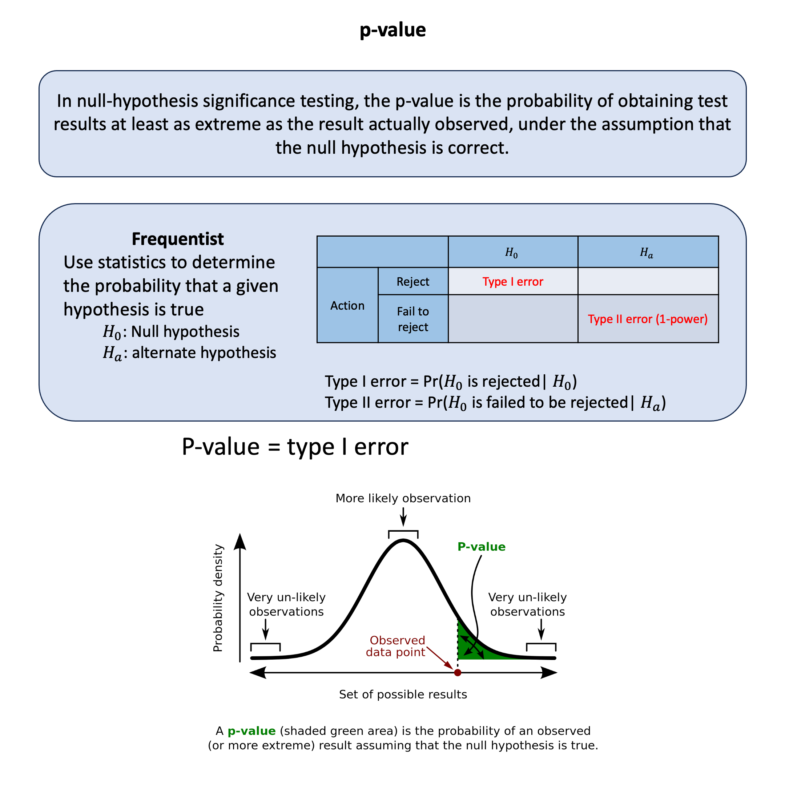

p-value#
In null-hypothesis significance testing, the p-value is the probability of obtaining test results at least as extreme as the result actually observed, under the assumption that the null hypothesis is correct.
Graphical Summary#

Key Formula#
The p-value represents the probability of observing a test statistic at least as extreme as what was actually observed, assuming the null hypothesis is true.
Technical Details#
Mathematical Definition#
For a test statistic \(T\) and observed value \(t\):
Key Properties#
Monotonic Relationship: Smaller p-values correspond to more extreme test statistics
Significance Level: We reject \(H_0\) if \(p\text{-value} \leq \alpha\) (\(\alpha\) is the significance level)
Critical Limitation: Asymmetric Logic#
Important: The null hypothesis \(H_0\) can never be “accepted” or “proven true” - it can only be:
Rejected (when \(p\text{-value} \leq \alpha\)): Strong evidence against \(H_0\)
Not rejected (when \(p\text{-value} > \alpha\)): Insufficient evidence to reject \(H_0\)
Contrast with Bayesian Inference when only considering \(H_0\) and \(H_a\)#
In frequentist:
The action we do in frequentist is to “reject the null” versus “fail to reject the null” under the observed data
“Not rejected” is not “accepted” or “true”. Absence of evidence is not evidence of absence
p-value is the type I error under the null hypothesis.
In Bayesian inference:
One can directly calculate the probability of accepting \(H_0\) given the observed data \(\text{D}\):
\[ P(H_0 | \text{D}) = \frac{P(\text{D} | H_0) \cdot P(H_0)}{P(\text{D})} \]and it can be either accepting \(H_0\) or any other model or hypothesis
Example#
You find a coin on the street and wonder: “Is this thing rigged?” So you flip it 10 times and get only 3 heads and 7 tails. Your gut says something’s off, but how do you know if you’re just unlucky or if the coin is actually biased?
This is exactly what p-values help us figure out. Instead of relying on gut feelings, we can ask: If this coin were perfectly fair, how often would we see results this extreme (or more extreme) just by random chance?”
Setting Up Our Investigation#
rm(list=ls())
# Our observed data
heads_observed <- 3
tails_observed <- 7
total_flips <- 10
# Our hypothesis
fair_coin_prob <- 0.5
cat("Observed: ", heads_observed, " heads out of ", total_flips, " flips\n")
cat("That's ", heads_observed/total_flips*100, "% heads\n")
Observed: 3 heads out of 10 flips
That's 30 % heads
What Would a Fair Coin Actually Do?#
Let’s simulate what happens when we flip a fair coin 10 times, thousands of times over:
set.seed(25) # For reproducible results
n_simulations <- 10000
# Simulate 10,000 experiments of flipping a fair coin 10 times
simulated_heads <- rbinom(n_simulations, size = total_flips, prob = fair_coin_prob)
cat("In our first 20 simulations, we got this many heads...")
head(simulated_heads, 20)
In our first 20 simulations, we got this many heads...
- 5
- 6
- 3
- 7
- 3
- 8
- 6
- 4
- 3
- 4
- 4
- 4
- 8
- 5
- 6
- 3
- 5
- 6
- 5
- 6
# Create a histogram to see the distribution
hist(simulated_heads,
breaks = 0:10,
main = "Distribution of Heads in 10 Fair Coin Flips\n(10,000 simulations)",
xlab = "Number of Heads",
ylab = "Frequency",
col = "lightblue",
border = "white")
# Mark our observed result
abline(v = heads_observed, col = "red", lwd = 3, lty = 2)
text(heads_observed, max(table(simulated_heads)) * 0.8,
paste("Our result:", heads_observed, "heads"),
col = "red", cex = 1.2)
{kind=link}
The Key Question: How Extreme Is Our Result?#
Now here’s the crucial insight: we want to know how often a fair coin would give us results as extreme or more extreme than what we observed.
Since we got 3 heads (which is below the expected 5), “more extreme” means getting 3 or fewer heads, OR getting 7 or more heads (the mirror image).
# Calculate p-value the simulation way
extreme_low <- sum(simulated_heads <= heads_observed)
extreme_high <- sum(simulated_heads >= (total_flips - heads_observed))
total_extreme <- extreme_low + extreme_high
p_value_simulated <- total_extreme / n_simulations
cat("Out of", n_simulations, "simulations:\n")
cat("- Got", heads_observed, "or fewer heads:", extreme_low, "times\n")
cat("- Got", total_flips - heads_observed, "or more heads:", extreme_high, "times\n")
cat("- Total extreme results:", total_extreme, "\n")
cat("- P-value (simulated):", round(p_value_simulated, 4), "\n")
Out of 10000 simulations:
- Got 3 or fewer heads: 1675 times
- Got 7 or more heads: 1748 times
- Total extreme results: 3423
- P-value (simulated): 0.3423
The “Exact” Mathematical Answer#
We can also calculate this precisely using the binomial distribution:
# Calculate the exact p-value
p_value_exact <- 2 * pbinom(heads_observed, size = total_flips, prob = fair_coin_prob)
cat("Exact p-value:", round(p_value_exact, 4), "\n")
cat("Simulated p-value:", round(p_value_simulated, 4), "\n")
cat("Difference:", abs(p_value_exact - p_value_simulated), "\n")
Exact p-value: 0.3438
Simulated p-value: 0.3423
Difference: 0.00145
What Does This P-value Actually Mean?#
Our p-value ≈ 0.34 means:
“If the coin were truly fair, we’d see results this extreme (3 or fewer heads, or 7 or more heads) about 34% of the time just by random chance.”
In other words:
NOT rare at all! Getting 3 heads out of 10 flips happens pretty often with fair coins
We can’t conclude the coin is biased - this result is totally consistent with a fair coin having a bad luck streak
We fail to reject the null hypothesis that the coin is fair